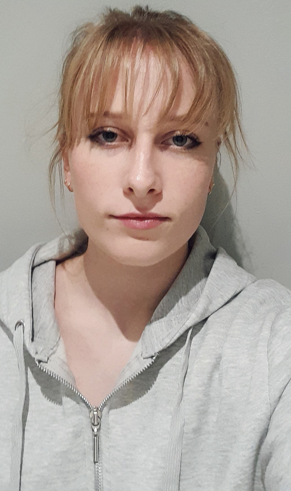

Deline Jacobs
Professional Summary
Completed one year Programming Foundation course in college (CTU).
Knowledge of front-end and back-end web development and some knowledge of software development.
I have a great interest in designing, therefore I will be able to contribute innovative ideas to your web design campaigns.
I am a qualified modern dance teacher and gymnastics coach.
Education
Hoërskool Die Wilgers
- Grade 12 - 2022 (Top 20 Academics)
- First Hockey Team
CTU Training Solutions
- Programming Foundation - 2023
- Microsoft Azure Data Fundamentals (DP-900)
- HTML and CSS
- JavaScript
- Python
- C#
- Java
- Class Representative
Gymnastics South Africa
- Gauteng Gymnastics Leader Course - 2023
South African Body of Dance (SABOD)
- Modern Dance Grade 12 - 2023
- Teachers (Tiny Tots - Grade 3) - 2023
Work Experience
I am currently a gymnastics coach at Elite Tumbling & Trampoline Club (2021 - Present).
I coach children of all ages trampoline, strength, and flexibility.
I have also judged at trampoline competitions.
Skills
Soft Skills
- Good communication
- Great memory
- Perfectionist
- Hard working
- Adaptability
Hard Skills
- Fluent in English and Afrikaans
- Web development
- Programming languages: Html, CSS, JavaScript, Python, C#, Java
- Azure Data Fundamentals
Certificates and Achievements
- Information Technology Specialist Certification: HTML & CSS
- Information Technology Specialist Certification: JavaScript
- Information Technology Specialist Certification: Python
- Microsoft Azure Data Fundamentals
- 2023 Gauteng (City of Tshwane) Gymnastics Leader Course
- SABOD Grade 12 Modern
My Hobbies
Contact Me